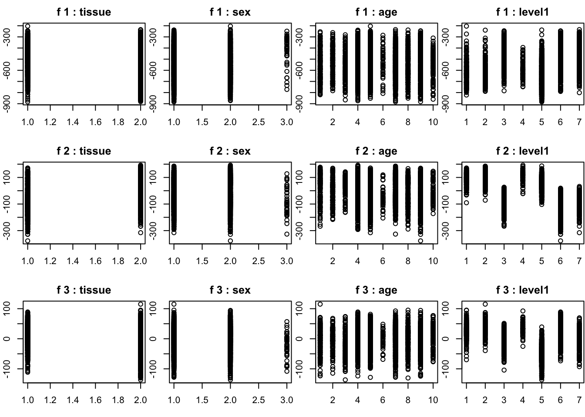
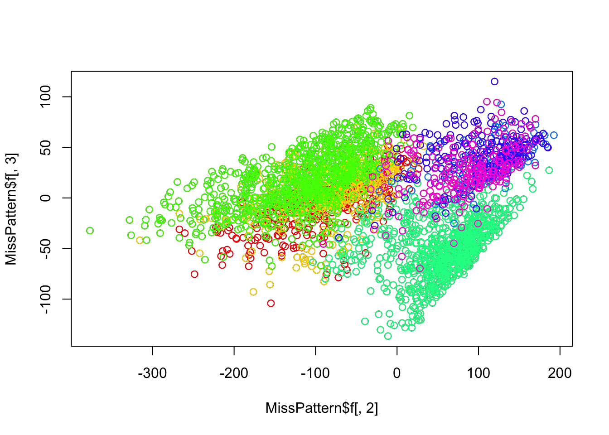
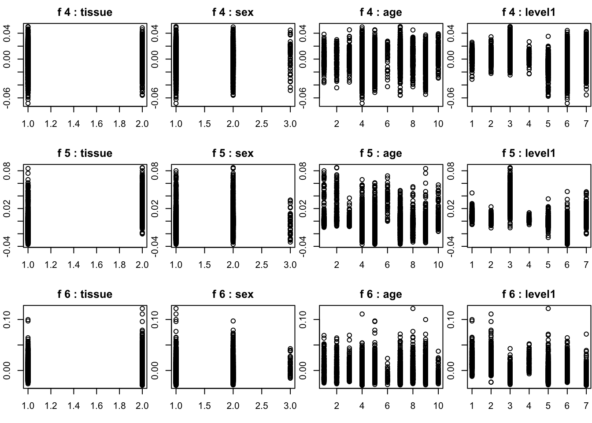
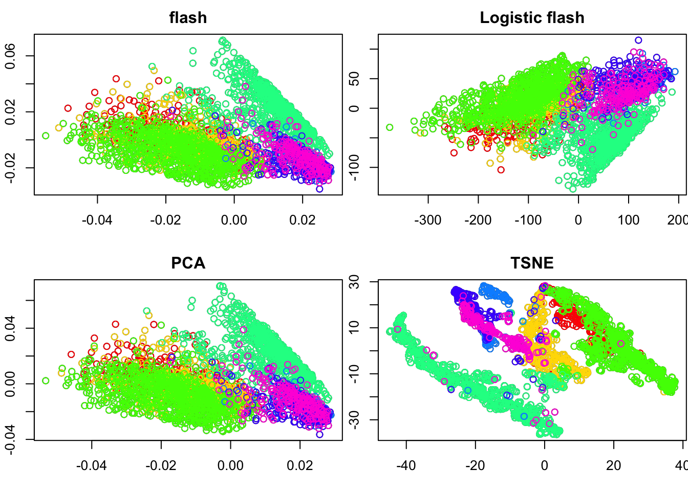

Last updated: 2017-02-20
Code version: 641c711
there is no ercc in this data set.
#devtools::install_github("jhsiao999/singleCellRNASeqMouseZeiselBrain")
library(singleCellRNASeqMouseZeiselBrain)Loading required package: BiobaseLoading required package: BiocGenericsLoading required package: parallel
Attaching package: 'BiocGenerics'The following objects are masked from 'package:parallel':
clusterApply, clusterApplyLB, clusterCall, clusterEvalQ,
clusterExport, clusterMap, parApply, parCapply, parLapply,
parLapplyLB, parRapply, parSapply, parSapplyLBThe following object is masked from 'package:stats':
xtabsThe following objects are masked from 'package:base':
anyDuplicated, append, as.data.frame, cbind, colnames,
do.call, duplicated, eval, evalq, Filter, Find, get,
intersect, is.unsorted, lapply, Map, mapply, match, mget,
order, paste, pmax, pmax.int, pmin, pmin.int, Position, rank,
rbind, Reduce, rep.int, rownames, sapply, setdiff, sort,
table, tapply, union, unique, unsplitWelcome to Bioconductor
Vignettes contain introductory material; view with
'browseVignettes()'. To cite Bioconductor, see
'citation("Biobase")', and for packages 'citation("pkgname")'.counts <- exprs(MouseZeiselBrain)
cell_labels <- pData(MouseZeiselBrain)
col_sum = colSums(counts)
row_sum = rowSums(counts)
col_index = which(col_sum != 0)
row_index = which(row_sum != 0)
# exclude the missing values
count_data = counts[row_index,col_index]
dim(count_data)[1] 19968 3005There are 20 rank in our result, so there might more rank.
MissPattern = readRDS("~/HG/LogisticFlash_workflow/data/singelcell/MouseZeiselBrain/MissPatternMouseZeiselBrain_K20.rds") par(mfrow = c(3,4), mar = c(5,4,4,2) - 1.9)
for(i in 1:3){
plot(as.numeric(as.factor(cell_labels$tissue[col_index])),MissPattern$f[,i],main = paste("f",i,": tissue" ))
plot(as.numeric(as.factor(cell_labels$sex[col_index])),MissPattern$f[,i],main = paste("f",i,": sex"))
plot(as.numeric(as.factor(cell_labels$age[col_index])),MissPattern$f[,i],main = paste("f",i,": age"))
plot(as.numeric(as.factor(cell_labels$level1_class[col_index])),MissPattern$f[,i],main = paste("f",i,": level1"))
}
plot(MissPattern$f[,2],MissPattern$f[,3])
unique(cell_labels$level1_class)[1] "interneurons" "pyramidal SS" "pyramidal CA1"
[4] "oligodendrocytes" "microglia" "endothelial-mural"
[7] "astrocytes_ependymal"class_level = unique(cell_labels$level1_class)
class_index = list()
for(i in 1:7){class_index[[i]] = which(cell_labels$level1_class == class_level[i])}
for(i in 1:7){
points(MissPattern$f[class_index[[i]],2],MissPattern$f[class_index[[i]],3],col = rainbow(7)[i])
}
We can see there are three classes
bflash = readRDS("~/HG/LogisticFlash_workflow/data/singelcell/MouseZeiselBrain/logcpm/bflash.rds")
bflash_varcol = readRDS("~/HG/LogisticFlash_workflow/data/singelcell/MouseZeiselBrain/logcpm/bflash_var_col.rds")par(mfrow = c(3,4), mar = c(5,4,4,2) - 1.9)
for(i in 1:6){
#par(mfrow = c(2,2), mar = c(5,4,4,2) - 1.9)
plot(as.numeric(as.factor(cell_labels$tissue[col_index])),bflash$l[,i],main = paste("f",i,": tissue" ))
plot(as.numeric(as.factor(cell_labels$sex[col_index])),bflash$l[,i],main = paste("f",i,": sex"))
plot(as.numeric(as.factor(cell_labels$age[col_index])),bflash$l[,i],main = paste("f",i,": age"))
plot(as.numeric(as.factor(cell_labels$level1_class[col_index])),bflash$l[,i],main = paste("f",i,": level1"))
}
par(mfrow = c(2,2), mar = c(5,4,4,2) - 1.9)
plot(bflash$l[,2],bflash$l[,3],main = "flash")
unique(cell_labels$level1_class)[1] "interneurons" "pyramidal SS" "pyramidal CA1"
[4] "oligodendrocytes" "microglia" "endothelial-mural"
[7] "astrocytes_ependymal"class_level = unique(cell_labels$level1_class)
class_index = list()
for(i in 1:7){class_index[[i]] = which(cell_labels$level1_class == class_level[i])}
for(i in 1:7){
points(bflash$l[class_index[[i]],2],bflash$l[class_index[[i]],3],col = rainbow(7)[i])
}
#plot(bflash_varcol$l[,2],bflash_varcol$l[,3],main = "flash column-wise variacne")
# unique(cell_labels$level1_class)
#class_level = unique(cell_labels$level1_class)
#class_index = list()
#for(i in 1:7){class_index[[i]] = which(cell_labels$level1_class == class_level[i])}
#for(i in 1:7){
#points(bflash_varcol$l[class_index[[i]],2],bflash_varcol$l[class_index[[i]],3],col = rainbow(7)[i])
#}
plot(MissPattern$f[,2],MissPattern$f[,3],main = "Logistic flash")
# unique(cell_labels$level1_class)
class_level = unique(cell_labels$level1_class)
class_index = list()
for(i in 1:7){class_index[[i]] = which(cell_labels$level1_class == class_level[i])}
for(i in 1:7){
points(MissPattern$f[class_index[[i]],2],MissPattern$f[class_index[[i]],3],col = rainbow(7)[i])
}
#library(limma)
#voom_ouptut <- voom(count_data, normalization = "none")
#log_cpm = voom_ouptut$E
#Y = t(log_cpm)
# svd_5 = svd(Y,nu = 5,nv = 5)
# saveRDS(svd_5,"~/HG/LogisticFlash_workflow/data/singelcell/MouseZeiselBrain/logcpm/svd_5.rds")
svd_5 = readRDS("~/HG/LogisticFlash_workflow/data/singelcell/MouseZeiselBrain/logcpm/svd_5.rds")
plot(svd_5$u[,2],svd_5$u[,3],main = "PCA")
# unique(cell_labels$level1_class)
class_level = unique(cell_labels$level1_class)
class_index = list()
for(i in 1:7){class_index[[i]] = which(cell_labels$level1_class == class_level[i])}
for(i in 1:7){
points(svd_5$u[class_index[[i]],2],svd_5$u[class_index[[i]],3],col = rainbow(7)[i])
}
tsne_3 = readRDS("~/HG/LogisticFlash_workflow/data/singelcell/MouseZeiselBrain/logcpm/tsne_3.rds")
plot(tsne_3$Y[,2],tsne_3$Y[,3],main = "TSNE")
# unique(cell_labels$level1_class)
class_level = unique(cell_labels$level1_class)
class_index = list()
for(i in 1:7){class_index[[i]] = which(cell_labels$level1_class == class_level[i])}
for(i in 1:7){
points(tsne_3$Y[class_index[[i]],2],tsne_3$Y[class_index[[i]],3],col = rainbow(7)[i])
}
sessionInfo()R version 3.3.0 (2016-05-03)
Platform: x86_64-apple-darwin13.4.0 (64-bit)
Running under: OS X 10.12.3 (unknown)
locale:
[1] en_US.UTF-8/en_US.UTF-8/en_US.UTF-8/C/en_US.UTF-8/en_US.UTF-8
attached base packages:
[1] parallel stats graphics grDevices utils datasets methods
[8] base
other attached packages:
[1] singleCellRNASeqMouseZeiselBrain_0.99.0
[2] Biobase_2.28.0
[3] BiocGenerics_0.14.0
[4] ggplot2_2.2.1
[5] workflowr_0.3.0
[6] rmarkdown_1.3
loaded via a namespace (and not attached):
[1] Rcpp_0.12.9 knitr_1.15.1 magrittr_1.5 munsell_0.4.3
[5] colorspace_1.3-2 stringr_1.1.0 plyr_1.8.4 tools_3.3.0
[9] grid_3.3.0 gtable_0.2.0 git2r_0.18.0 htmltools_0.3.5
[13] yaml_2.1.14 lazyeval_0.2.0 rprojroot_1.2 digest_0.6.12
[17] assertthat_0.1 tibble_1.2 evaluate_0.10 labeling_0.3
[21] stringi_1.1.2 scales_0.4.1 backports_1.0.5 This R Markdown site was created with workflowr